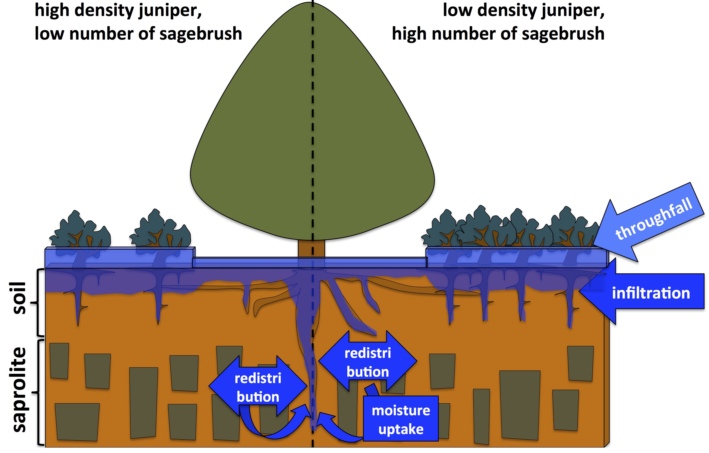

Juniper Hydrology Conceptual Model
With our understanding of interception, snow, soil, and saprolite/weathered bedrock hydrologic processes, I (with the help of collaborators) developed a conceptual model to understand how hydrologic processes differ between juniper and sagebrush. Here is that conceptual model below.
Our study revealed that juniper indeed do intercept a significant portion of precipitaiton. However, during some snow events, increased snow deposition occurs below the trees due to snow wells formed around the trees (described here. Another study reavealed that at the surface, more infiltration occured after rain storms under juniper compared to sagebrush, when adjacent sagebrush were low density (left side). Conversley, more infiltration occured in sagebrush comapred to juniper when juniper were higher density (right side). Infiltration to deeper layers (60 cm) after rain events only occured below juniper. This strongly evidences roots and preferential flow increasing infiltration. This means deep rooted juniper likely allow infiltration deep into the soil and saprolite. This research was described here. Our geophysical studies (described here) indicated that changes in subsurface from the wet to dry season occured under large juniper trees as deep as 12 m. This evidences that juniper both funnel water to 12 m deep, and extract that water in the dry season. Taken as a whole, and juniper trees are likely resilient under changes in climate or periods of drought. This may be in part why they have expanded into many areas previously dominated by sagebrush.

figure caption: Conceptual figure of throughfall, infiltration, and water uptake processes between the canopy and interspace in low and high density juniper areas. More throughfall occurs in the interspace due to juniper canopy interception, therefore greater total infiltration occurs in the near surface of the interspace. But due preferential infiltration and roots providing pathways for preferential flow below the juniper and sagebrush, deeper infiltration occurs in areas with A) more sagebrush and B) juniper. Infiltration goes deeper in the interspace where there are more sagebrush. Infiltration goes deepest below juniper regardless of where it resides. Juniper also uptake water at deep in the subsurface in the saprolite.
Information on this page is based on this publication, where you can find more detailed information about this study.